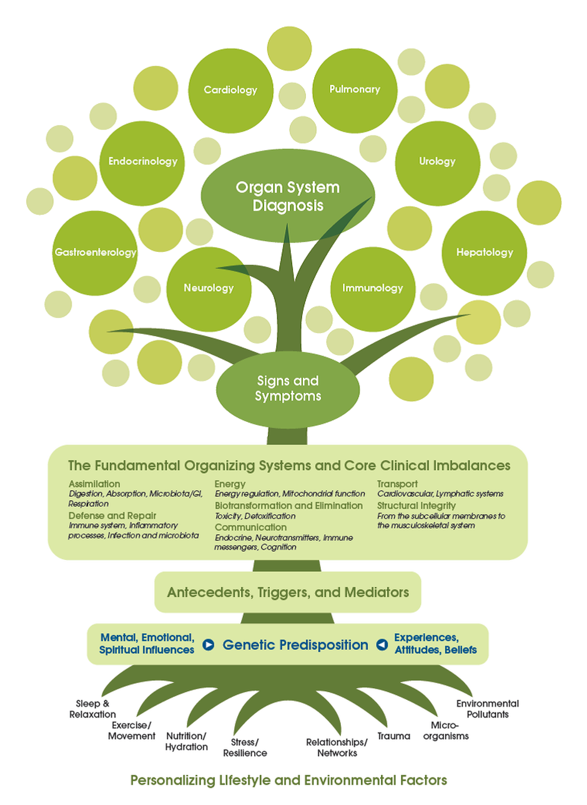

SAĞLIK İÇİN GÜNCEL BİR PERSPEKTİF: FONKSİYONEL TIP
Her hekim öğrenciliğinin başında, vücudun bir bütün olduğunu ve her organın bu bütüne katkı sağladığını öğrenir. Klinik eğitim süreci başladığında ise bu bütüncül yaklaşım yerini branşlara bırakır.
Branşlaşma modern çağın bir getirisi olan artan bilgi yüküyle baş etmeyi kolaylaştıran, kişinin bir alanda uzman olmasını sağlayan bir bakış açısıdır. Bu sayede organlarınızda bir problem olduğunda hangi uzman doktor ile görüşeceğinizi bilirsiniz. İlgili uzman da o alandaki bütün gelişmeleri takip edebilir.
Branşlaşma ile ilgili asıl problem, kişinin problemi çözerken o alanın dışındaki verileri yok saymasıdır. Örnek olarak, eklem ağrısı şikayeti ile başvurduğunuz çoğu ortopedi uzmanı bağırsak alışkanlığınızı sorgulamaz. Halbuki probleminiz romatizmal ise bağırsak problemi ile tetiklenmiş olması olasıdır. Ne de olsa vücuttaki bağışıklık hücrelerinin %60-70 kadarı bağırsaktadır. (Romatizmal hastalıklar aşırı uyarılmış bağışıklığın kişinin kendi hücrelerine saldırmasının sonucudur)
Fonksiyonel tıp bakış açısı organları değil fonksiyonları inceler. Bu nedenle bağışıklık ile ilgili vücudun herhangi bir yerinde bir problem yaşıyorsanız, doktorunuz da bağışıklığı ilgilendiren diğer kısımları sorgulayacaktır. Fonksiyonel tıp bakış açısında bu sorgu sadece bağışıklık ile de kalmayacaktır. Vücuttaki sistemlerin hiç biri diğerinden bağımsız değildir. Bağışıklığı incelerken kişinin stres hormonlarını ve ya detoksifikasyon (zehirsizleştirme) kapasitesini gözardı edemeyiz.
Bir diğer nokta ise sebep sonuç ilişkisidir. Branş bakış açısında tansiyonun ilaç ile düşürülmesi yeterlidir. Fonksiyonel tıp bakış açısında ise tansiyonun nedenini bulmak ve onu düzeltmek esastır.
Fonksiyonel tıp ilaçlara karşı değildir. Aksine, ilk müdahalelerde ilaçların yerini bilir ve kabul eder. Çoğu zaman altta yatan neden düzelmeye başladıkça, kişinin ilaçlara ihtiyacı azalır. Düzelmenin doğal sonucu olarak da ilaçlar azaltılmış olur. Asla tersi yapılmaz.
Fonksiyonel tıp, geleneksel ve tamamlayıcı tıbbın değil, modern tıbbın bir parçasıdır. Bilimsel dayanağı olmayan hiç bir tedaviyi size uygulamaz. Bilimsel çalışmaları yapılmış ve bir tedavi ispatı sunmuş ise tamamlayıcı tıptan da faydalanır.
Akut tedavilerde modern tıbbın şu anki bakış açısı son derece gerekli ve önemlidir. Konu kronik hastalıklara geldiğinde ise burada semptomları rahatlatmanın ötesine nadiren geçebilmektedir. İşte tam burada fonksiyonel tıp devreye girmektedir. Fonksiyonların düzelmesi, bozulmasından daha uzun süreceğinden iyileşme yavaş ama kararlı adımlarla gelecektir. Belki tansiyon için ilaç yutmak hayat tarzını değiştirmekten daha kolay gelecektir. Ancak kesin sonucu hayat tarzı değişiklikleri ile, fonksiyonel tıp bakış açısında bulacaksınız.
Fonksiyonel tıp bakış açısı tıp fakültelerinde anlatılmaz. Bu nedenle çoğu meslektaşım ilaç dışı konularda dar bir eğitim almıştır. Bundan sonraki öğrenim ise kişinin kendisine bırakılmıştır. Bu nedenle fonksiyonel tıp konusunda uzmanlaşmış hekim bulmak zordur. Neyse ki fonksiyonel tıp bakış açısı son yıllarda meslektaşlarım arasında yaygınlaşmaktadır.
Sağlıklı günler dilerim,
Dr. Murat GÖKDUMAN
